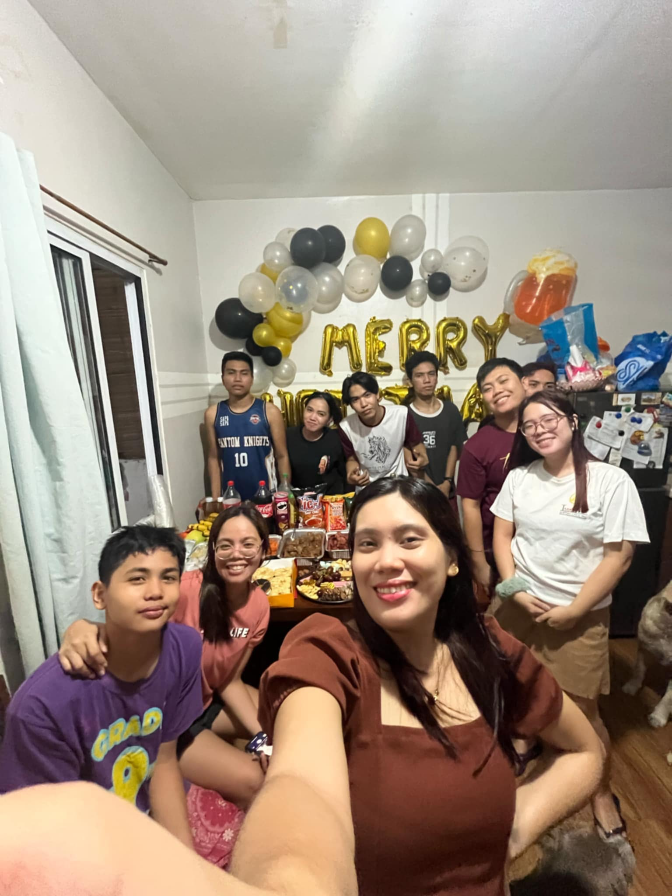

Celebrating Christmas with Family and Cousins
Published on May 2025
Christmas has always been my favorite time of the year, and this time it was extra special because we got to celebrate it with our extended family and cousins under one roof. The house was filled with laughter, music, and the scent of delicious food being prepared in the kitchen.
We exchanged stories, played games, and of course, took lots of pictures beside the Christmas tree. One of the highlights of the night was our small gift exchange — the excitement on everyone's faces, especially the little ones, was priceless.
More than the food and the presents, what made the celebration truly meaningful was the time spent with people we love. It reminded me that the heart of Christmas isn’t in what we receive, but in the joy we share with those who matter most.
← Back to Home